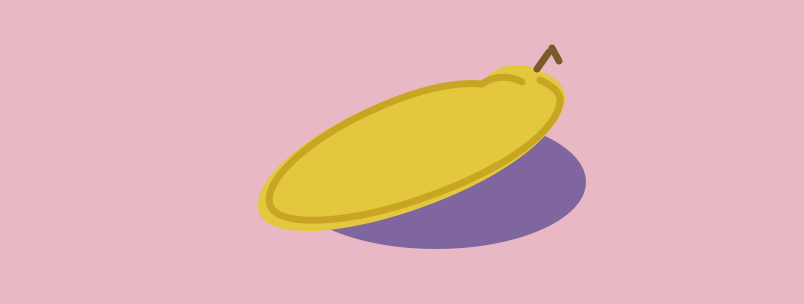

这里展示我的个人简介、项目经历与持续进行中的创作内容。用更直接的方式， 让访问者快速了解我的设计方向与表达方式。
围绕轻松生活方式展开的视觉项目，聚焦情绪表达与画面氛围的平衡呈现。
一次复古产品视觉重构练习，强调物件质感、色彩对比和经典造型语言。
一个偏概念化的小型视觉项目，尝试用简单物体和高饱和背景构建更强的记忆点。

用于录入方案需求、整理附件与生成完整报告流程的结构化智能助手。
帮助梳理任务优先级与推进节奏，让复杂项目具备更清晰的执行路径。